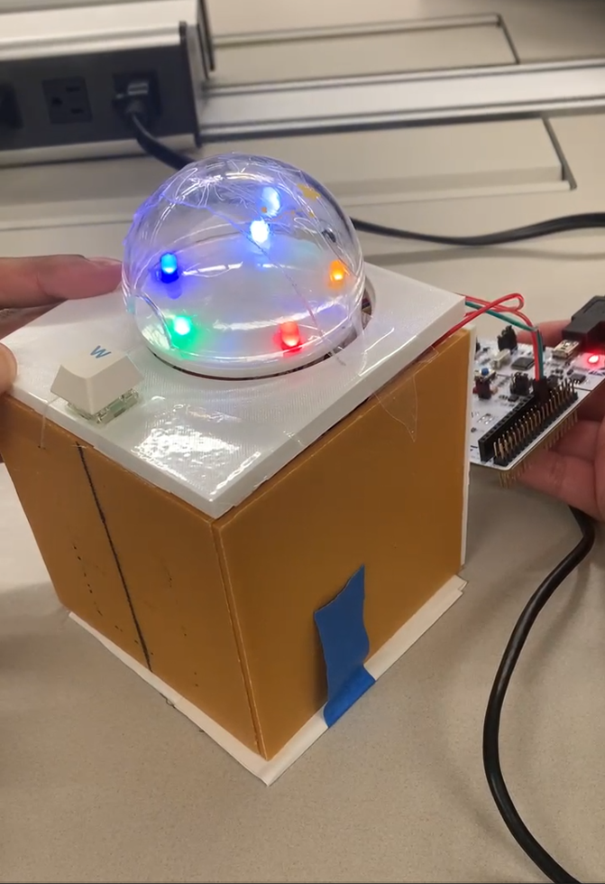
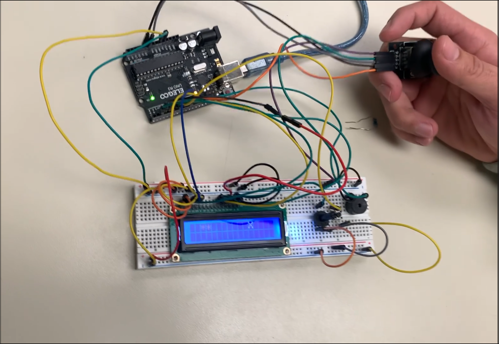
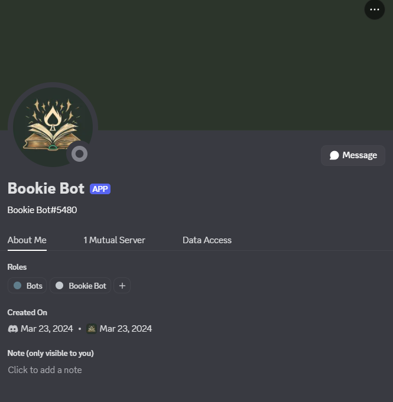

01Light Chaser
A reaction-based LED chase game built through low-level microcontroller programming, with timed sequences, responsive button input, and stable debouncing.
GPIO · Timers · Interrupts · Debouncing
View repositoryOpen to building what’s next
I’m Tarun, a developer who enjoys working where software meets the physical world—from microcontrollers and real-time inputs to interactive applications.
Selected work
A collection of hands-on builds across embedded systems, games, and software.

01A reaction-based LED chase game built through low-level microcontroller programming, with timed sequences, responsive button input, and stable debouncing.
GPIO · Timers · Interrupts · Debouncing
View repository
02A joystick-controlled target game with real-time input handling, LCD rendering, and responsive sound feedback on an Arduino microcontroller.
Joystick · LCD · Buzzer · Input handling
View repository
03A Discord bot system that manages multiple mini-games with persistent tab and currency logic, including CoinFlip and Crash.
Bot commands · Game logic · Persistent state
View repository